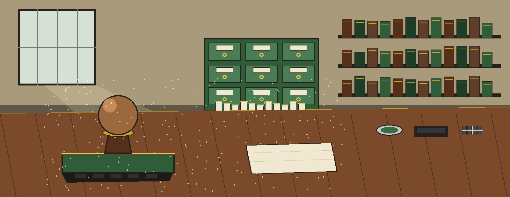
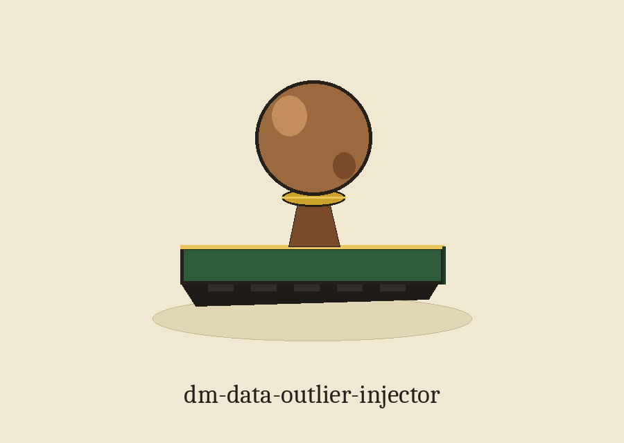

dm-data-outlier-injector: The Librarian's Date Stamp Ritual
The page is laid out as a returns desk worked from left to right, each plate a task at the desk. Beat one is the quiet desk before opening time: stamp at rest, loan card blank, drawer shut, nothing named. Beat two is the naming: the cabinet label receives the name dm-data-outlier-injector, and the desk becomes the desk for this one job.

Plate 1. The job
Plausible outliers are injected into numerical columns so that distributions are distorted and genuine outliers are masked. The tool sits among programs that generate or mask sensitive data with values that look realistic while meaning nothing. The description names three inputs: count, column, and standard deviation multiplier. Those three are stated here as description claims, with a clear note that the parameters block documents none of them.
Plate 2. Fetching, with an open repair
git clone https://github.com/ShadowGuard-AI/dm-data-outlier-injector
The line above is labelled a correction. The README clone line uses the organisation name without its hyphen, a form that does not match the current account spelling, so the corrected direction above restores the hyphen. The corrected line is never passed off as the published line, and the published line stands unchanged in the preserved record at the foot of this page.
Plate 3. The invocation shape
./dm-data-outlier-injector [params]
That shape is the sole invocation the source offers, and the space around it is left empty on purpose. No invented example supplies a count, a column name from real data, or a multiplier value.
Plate 4. The controls, candidly
The one documented control is help: the flag -h, which shows the help message and exits.
Plate 5. The output guard
Output must not be input. When the resolved output path equals the resolved input path, refusal happens at exit 1 before any write, including when the same file is named through a ./ alias or a symlink.
Plate 6. No Spread, No Outlier
When a named column has zero or undefined standard deviation, covering a single row, a constant column, or a non numeric column, the run exits 1 with an error stating that no outlier can be drawn from a column with no spread, before any output is written. No sample column and no sample value is shown on this plate.
Plate 7. Licence, kept in two parts
First and apart stands the repo LICENSE file: MIT terms, its holder described by shape only, years spanning a stretch, a given name, a family name behind it, a shortened form in brackets that ends on one initial, and a handle following in brackets of its own. The holder line is not quoted here.
Second, labelled as the README record, stands the README closing line in its published unhyphenated organisation form: Copyright (c) ShadowGuardAI. The two credits are kept apart because their holder wordings differ in form and in spelling.
The desk at closing
Beat five: stamp back on its rest, loan card filed into the drawer, drawer shut, edition complete and press at rest. Morning order answers morning order.
The preserved README record
 # dm-data-outlier-injector Injects statistically plausible outlier data points into numerical columns to distort distributions and mask genuine outliers. Takes number of outliers, column, and standard deviation multiplier as arguments. - Focused on Tools designed to generate or mask sensitive data with realistic-looking but meaningless values ## Install `git clone https://github.com/ShadowGuardAI/dm-data-outlier-injector` ## Usage `./dm-data-outlier-injector [params]` ## Parameters - `-h`: Show help message and exit ## Output path and column spread The output file must not be the input file. If the resolved output path equals the resolved input path, the run refuses at exit 1 before any write, including when the same file is named through a ./ alias or a symlink. If the named column has no spread, meaning its standard deviation is zero or undefined (a single row, a constant column, or a non-numeric column), the run exits 1 with an error naming that no outlier can be drawn from a column with no spread, before writing any output. ## License Copyright (c) ShadowGuardAI